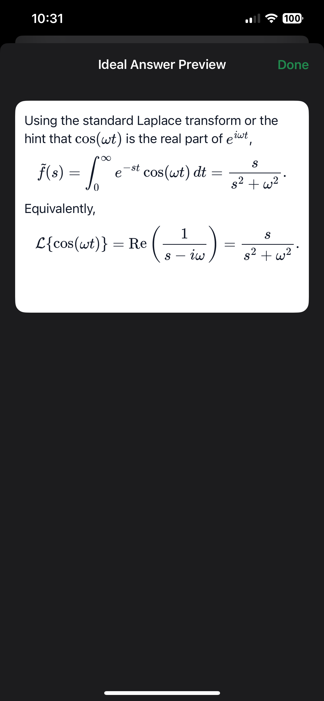

HGrader uses state-of-the-art omni models to understand any assignment — math, science, essays, diagrams, chaotic layouts — without special setup. Pair it with CanvasConnect to publish directly to Canvas LMS.
Source code on GitHub


Built on frontier multimodal models that see and reason like a human — but faster.
Calculus, organic chemistry, literature essays, circuit diagrams, foreign languages — the AI understands them all, out of the box.
Messy handwriting, answers in margins, out-of-order responses, smudged ink — the vision model reconstructs intent regardless of layout or legibility.
No backend servers. Runs entirely on your iPhone with your own API key. Student data never touches a third-party server — only you and the model.
As frontier models advance, HGrader's accuracy, speed, and subject coverage improve automatically — no app update needed.
Both HGrader and CanvasConnect are fully open source. Inspect the code, contribute improvements, or fork for your institution.
Every score comes with the AI's reasoning, rendered with built-in LaTeX for proper math notation. Review, agree, or override — you stay in full control.
HGrader handles the intelligence. CanvasConnect handles the integration.
An iPhone app for instructors. Scan a blank assignment, let AI generate a rubric, then batch-scan an entire stack of student work. AI grades every submission asynchronously while you keep working. Review, adjust, export.

A Python CLI that takes HGrader exports and delivers them to Canvas LMS. Fuzzy-matches student names to your roster — even with nicknames, typos, or non-Latin characters — builds submission PDFs, and posts grades via the Canvas API.
$ ./canvas-connect run
✓ Inspecting exports...
✓ Loading roster...
✓ Matching students (28/28)
✓ Posting grades...
✓ Uploading PDFs...
Pipeline complete.Capture the blank assignment and student work on your iPhone
AI generates a rubric and scores each submission with reasoning
Package results as a structured session export
CanvasConnect maps students to your Canvas roster
Grades and PDFs are posted to Canvas
iOS · Multimodal AI
JSON + CSV + Scans
Python CLI · Canvas API
Grades + PDFs Published
From scanning to AI grading to built-in LaTeX rendering of math feedback — you stay in control.

Document scanning

Rubric review

Job status

AI reasoning per question

Built-in LaTeX rendering
Whether you're grading assignments or extending the codebase.
Learn how to scan, grade, review, and export assignments using HGrader on your iPhone.
Read the guide DeveloperArchitecture, SwiftUI views, SwiftData models, OpenAI integration, and build setup.
View developer docs CanvasConnectConfigure, match rosters, post grades, and upload submissions to Canvas LMS.
Read the guide DeveloperPython modules, pipeline architecture, Canvas API wrapper, and extension points.
View developer docs WorkflowThe complete workflow from scanning paper assignments to published Canvas grades.
See the workflow FeaturesDeep dive into scanning, AI rubric generation, batch processing, and export formats.
Explore features